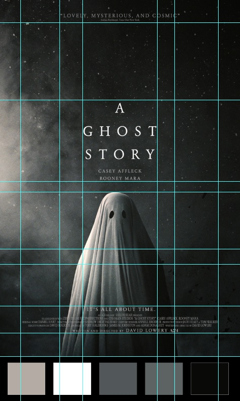

For our first assignment, we had to find a poster we enjoyed and analyze its design. I'm not exposed to a ton of posters, and to find some ideas I was thinking of movies I really enjoyed... but I actually don't watch a lot of movies, either. I remembered seeing A Ghost Story on a long plane ride I'd been on and really enjoying it, so I decided I'd check out the poster. This is that poster!

The first thing that strikes me is the arrangement of space. The poster is very vertically oriented, and is split into three sections which are actually delineated by text rather than by picture: the endorsement on the top, the title which is in the middle, and the cast/crew details on the bottom. The exact center of the poster is not actually the ghost, but the actor's names above the ghost, and the ghost itself is just a bit under the center, which I think is very interesting and enhances the sense of verticality.
The colors are all grayscale, and they span from white to black. What I really like here is that the light comes from the left and it gets darker as it goes to the right, so that across the ghost you have every shade of white to grey to black.
From what I can find on What The Font, the poster uses URW Garamond for all of its text, which is another cool way to tie things together. I think in a lot of movie posters the text gets in the way of the visuals, but in this one I think it brings things together more.
I also plotted out the gridlines on the poster. Not only is everything incredibly symmetrical, but a lot of the delineations that I plotted out result in boxes that are roughly the same size. Overall I think the structure of the poster contrasts well with the content, especially the light spray coming from the side. I'm a huge fan of negative space, so it works well for me.
 Comments? Questions? Concerns? Email me here!